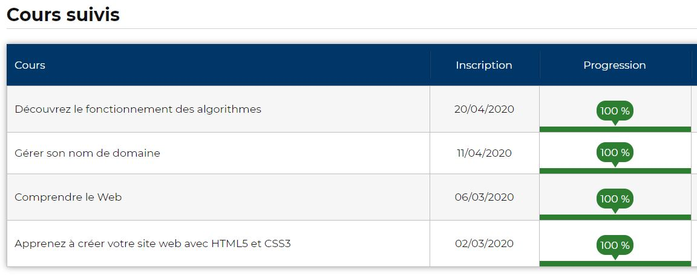
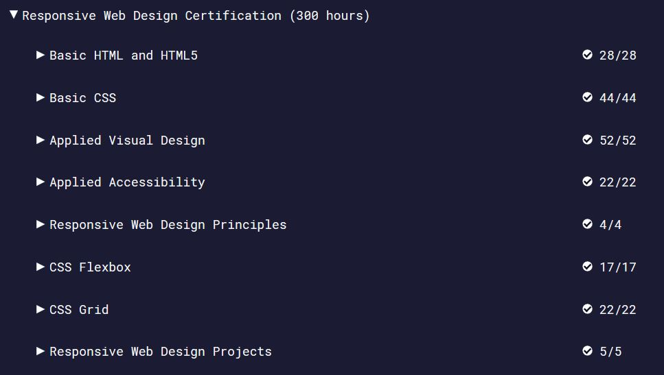

Mes compétences en dévelopement web
Semaines du 20 avril au 10 mai 2020
Mes objectifs
- Rendre ce site responsive
- Améliorer le responsive du site "Eva Quermat"
- Maitriser les bases de l'algorithmie
- Alimenter mon site sur la réglementation
Ma progession en image
- Openclassroom 
- FreeCodeCamp 
Mes compétences acquises
Du 02 au 08 mars 2020 : HTML, fonctionnement du web, git
- Comprendre le fonctionnement du web et d'internet
- Connaître les différents métiers du développement web
- Structurer des pages en HTML avec l'éditeur Visual Studio Code
- Commiter mon projet sur Git et le publier sur Github
Du 09 au 19 avril 2020 : CSS
- Le vocabulaire : sélécteur, propriété, valeur
- La syntaxe
- Les sélecteurs
- Le modèle de boîte
- Les polices et formats de texte
- Les formats des couleurs
- Les unités de mesure
- Le positionnement
- Les éléments flottants
- La propriété background
- Les bordures et les ombres
- Les flexbox
- Les animations
- Organiser mon code CSS selon la méthode SMACSS
- Utiliser les media queries pour rendre les sites responsives
- Appréhender le responsive en créant un menu adapté aux mobiles
11 avril 2020
- Comprendre le fonctionnement des noms de domaines
- Héberger un site gratuitement sur webou.net en utilisant son nom de domaine
Mes objectifs à atteindre pour septembre
- Maitriser 5 langages : HTML, CSS, Javascript, PHP et SQL
- Maitriser le framework Symfony
- Les protocoles : comprendre leur fonctionnement en détails
- Architecture des ordinateurs : comprendre le fonctionnement des machines
- Numérotation binaire et hexadécimale
- Adressage IP/réseau
- Configurer DNS
- Configurer serveur apache ou nginx
- Maitriser la réglementation du commerce électronique
- Maîtriser les noms de domaine et l'hébergement des sites